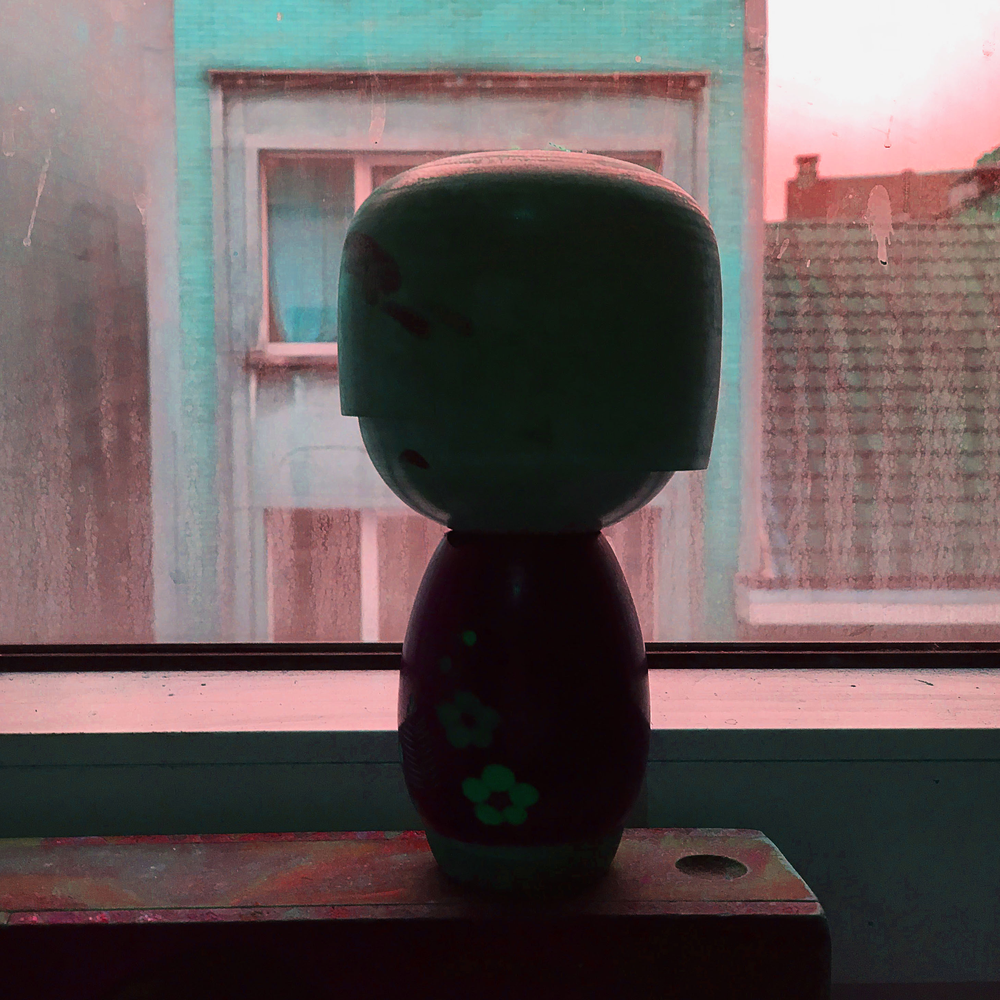
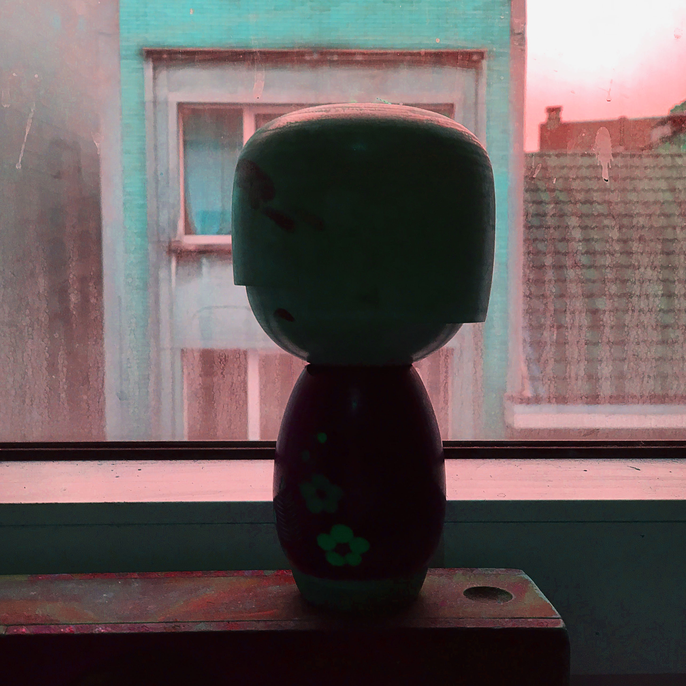

Photography for a project in which I was tasked to play with composition and light.
The Japanese Kokeshi doll is said to bring good luck and is a popular souvenir. They are also just a nice piece of decoration. My goal was to create interesting compositions, with the usage of a simple yet elegant object. They're also a good showcase of the inspiration I find in art from around the world for my designs.
The images were edited in Adobe Photoshop to create a dreamlike atmosphere. All in all this was a simple project, but I believe it showcases my editing skills using even the most simple of source material.